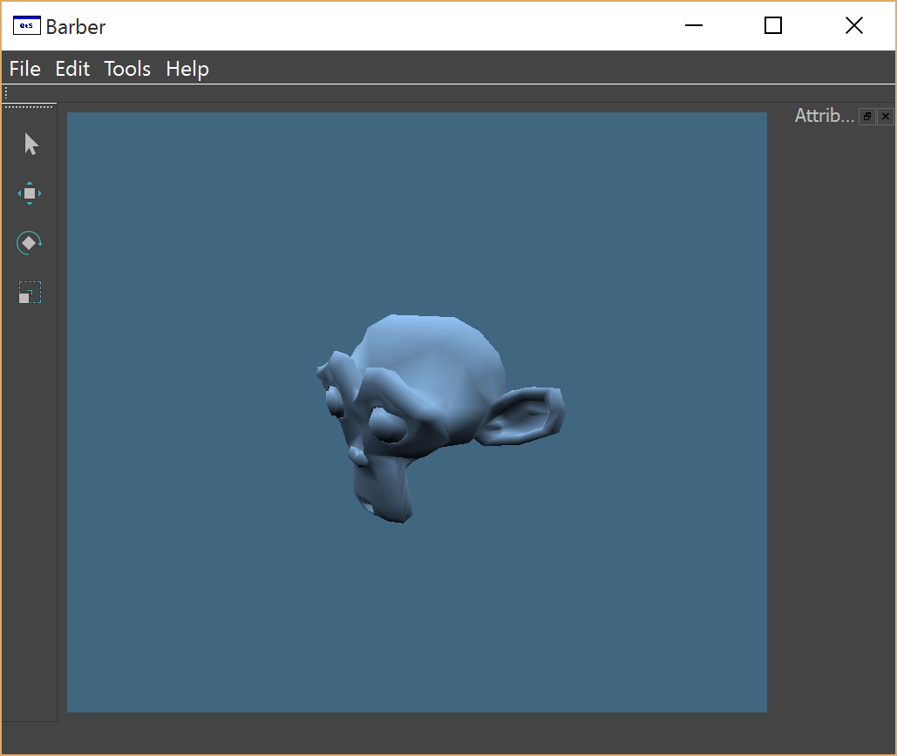
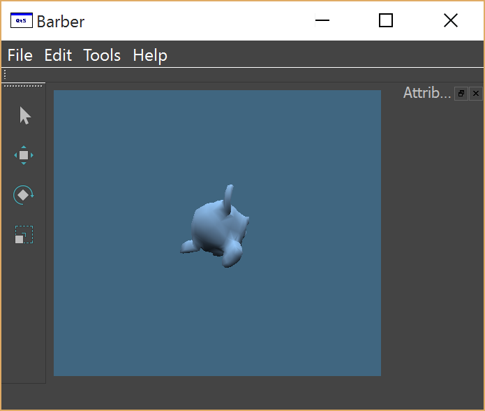
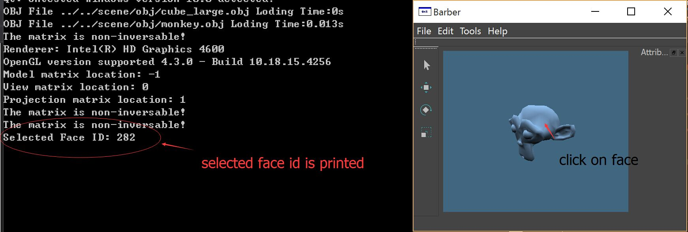

|
CSCE 645/VIZA 675: Geometric Modeling Final Project: Update 1 Shenyao Ke |
| Extra Library(GitHub Link) |
|
Bacis User Interface Read obj file and render with lambert shader. Tool icons are added but needed to be implemented later.  |
|
Camera Transformation Rotation and translation are applied to the camera, so user can romain in the scene to view from different angle.  |
|
Ray-Object Intersection Click on screen, object is selected. More shader work needed for presenting selected face.  |